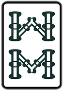

麻將作為歷史悠久的傳統遊戲在經歷許多地區的人們修改規則後衍生出了許多種玩法，最常見的便是臺灣麻將、美國麻將、日本麻將、香港麻將，以下對這四種最常見的玩法做介紹。
臺灣麻將
現今的臺灣麻將在不同地方有不同的玩法，以下的玩法是以中華麻將競技協會提出的玩法規則為基準，往後有機會會再提出其他較常見的不同玩法。
基本規則 |
||
|
起始手牌為 16 張牌，當手中的 16 張牌與第17張牌(這張會是自己摸起來的，或是由其他三個玩家其中一個打出的)剛好可組成五組順子或刻子(又稱坎)，再加上一對將(又稱雀頭或眼)時即為胡。 |
||
基本規則 |
|
起始手牌為 16 張牌，當手中的 16 張牌與第17張牌(這張會是自己摸起來的，或是由其他三個玩家其中一個打出的)剛好可組成五組順子或刻子(又稱坎)，再加上一對將(又稱雀頭或眼)時即為胡。 |
| 圈 | 麻將一將共有四圈，分為東、南、西、北圈。每圈四個玩家皆需依逆時針的順序做完莊才可進行下一圈。 |
| 順子 | 由三張連續的數字所組成，例如三萬、四萬、五萬。 |
| 刻子 | 又稱坎。由三張同樣的牌所組成。 |
| 將 | 又稱眼。由兩張同樣的牌所組成。而字牌只能是將或刻子。 |
| 槓 | 由四張相同的牌所組成。 |
| 花牌 | 麻將共有八張花牌，分為「春、夏、秋、冬」及「梅、蘭、竹、菊」。摸到花牌時需將花牌攤開並從牌山尾端再摸一張牌。 |
| 順子 | 刻子(坎) | 將(眼) | 槓 |
|  |
| 花牌 |
用語
| 碰 | 假設手上有兩張牌想湊成刻子，當有其中一個玩家打出與這兩張牌相同的牌，這時即可喊碰並將這張牌拿回，與原本手牌裡的兩張牌一同攤開且不能再取回或變更。 |
| 槓 | 當其他玩家打出一張與手牌中的刻子相同的牌時即可喊槓，這時必須再從牌山的尾端摸一張牌後才可再打牌。但在臺灣玩法中只能槓對家即下家的牌，或是自己摸到第四張相同的牌時也可暗槓。 |
| 吃 | 假設手上有兩張牌想湊成順子，當您的上家(您左手邊的玩家)打出可使這兩張牌湊成順子的牌，這時即可喊吃並將這張牌拿回，與原本手牌裡的兩張牌一同攤開且不能再取回或變更。 |
- 當同時有兩個玩家喊吃跟碰(或槓)時，碰(或槓)需優先。
- 當有吃、碰牌的動作時就不需再摸牌，直接從手牌裡打出一張牌。
| 聽牌 | 假設現在手牌中只差一個順子或一個刻子或一個將，這時的牌即為聽牌。 |
| 自摸 | 在聽牌時，自己摸牌摸到可以胡的牌就稱為自摸。需注意這張牌不能碰到手牌及海底的牌，否則就算自摸無效。 |
| 過水 | 當需要吃、碰或聽牌時，若有一玩家打出了您想要的牌，但您並未喊吃、碰或胡牌時即算過水，這時若您想再喊吃、碰相同的牌，必須等到您再摸一張牌後才可喊吃、碰，而胡牌則必須等到您再摸一張牌後且這張牌亦非您的自摸牌時，即可再喊胡牌，若是自摸牌則必須選擇轉章或是等待再摸下一次的牌。 |
- 以下舉個簡單的例子。
| 這是一副已經聽一、四筒的牌 |
- 在這樣的情況下，若您的下家打一筒但您沒喊胡，這時若您的對家馬上再打一筒您就不可喊胡，必須等到上家打了牌，您也摸了並打出一張牌後才可再胡牌。
- 若您剛好這次摸到的牌是一筒或四筒，那麼您也不能宣告自摸，只能選擇是否轉章或繼續聽一、四筒，但皆需再等到下一次摸牌後才能再胡。
美國麻將
用語
- 面子
- 面子是麻雀手牌組成的基本元素。在一般十三張麻雀之中，和牌之手牌由4組面子及1對雀頭形成。
- 百搭牌
- 與臺灣麻將不同，美國麻將多了 8 張百搭牌(又稱鬼牌、小丑、萬用牌)，故美麻總共有 152 張牌。
- 百搭牌不能在交換手牌時傳給他家。 擁有3張以上時可作為單純的面子，在遊戲中被丟出的百搭牌會被認作上次出的牌。
遊戲玩法
- 查爾斯頓(換牌)
-
查爾斯頓就是玩家之間一系列牌的交換。只有第一輪的查爾斯頓交換是必須進行的，一輪查爾斯頓由三次傳牌組成。
1. 將自己不要的3張手牌給下家。
2. 將自己不要的3張手牌給對家。
3. 將自己不要的3張手牌給上家。在這次傳牌中，玩家可以選擇“盲傳牌”，在接過別的玩家傳來的牌後，在不看是什麼牌的情況下就拿中一張二張或是全部三張牌再傳給其左邊的玩家。 - 第二次的查爾斯頓需要所有玩家同意才可進行，而第三次則是面對面坐的兩個玩家協商好後即可互換。當換完後即可開始遊戲。
- 遊戲的目標是組成一整套(或"手")，包含4組3張 (3張相同的牌 (或"碰")或3張同花色序數相連的牌)和一個對子，一共14張。
- 開始時每個玩家有13張牌。每輪，玩家摸起第14張，然後打出一張牌在桌子中心，字朝上。這時，其他玩家能選擇過或要那張牌湊成組(碰、吃或杠)或宣佈贏("和牌")。 第一個完成一手牌（14張）的玩家贏。
日本麻將
配牌
- 洗牌和砌牌
- 在每局遊戲開始時，將所有麻將牌混洗好並背面朝上碼成牌山的過程。每位玩家都要在自己面前碼牌，長度為17墩，每墩上下各一張。這些碼好的牌被稱為牌山或牌牆。如果使用的是全自動麻將桌，則機器會自動完成這一過程。
- 開門
- 將牌山碼好之後，由本局莊家擲兩枚骰子，根據擲出的數目，由莊家起逆時針數至某家，此玩家即在面前的牌山中開門。開門的位置是從牌山的右側數起，數至與骰子擲出數目相同的墩數，分開此墩與其左側的一墩牌。開牌點左側的兩墩即為莊家第一輪配入的牌。
莊家配入這兩墩共4張牌，隨後，南家取得在其左側的兩墩4張牌，並依次向下直至每人均配入兩墩4張牌。莊家再繼續順時針配入兩墩牌，然後重複上述過程，直至每人配入12張牌。
莊家取得剩餘牌山中順次第一墩和第三墩的上張牌共2張，其他閒家依次各取1張。最終莊家共配牌14張，閒家配牌13張。
- 王牌
- 在開門位置右側的7墩14張牌組成王牌。王牌並不用來摸牌，而是用來開嶺上牌和翻出加分牌指示牌。
- 嶺上牌
- 是王牌最靠近開門位置的兩墩4張，用來在開槓時補入手牌。由於嶺上牌僅有4張，因此一局中開槓的最大數目也被限制為4次，超過的槓一律不得開出，也有四槓流局的規定。
- 加分牌指示牌
- 從開門位置起在王牌中數出第三墩，翻開此墩的上張牌，此牌為加分牌指示牌，用於指示遊戲每局中的加分牌。
- 壁牌
- 狹義的壁牌是指牌山中除了王牌以外的其他牌。為區分王牌和壁牌，一般會將其與牌山稍稍分開一段距離。
摸打
摸牌後，將任意一張牌放置在桌上的行為稱為出牌。須注意的是在日本麻將中，打出的牌須在自己面前、牌桌中央按6張一列整齊排列，以便其他玩家查看。與牌山(山)相對應，這些捨棄的牌所處的位置被稱為河。在一局中，如果從配牌開始直到流局，某位玩家所打出的牌都是么九牌，且均未被別家鳴牌過，則成立「流局滿貫」役。
- 胡牌 日本麻將的胡牌要求：
- ◼滿足本局的翻數要求，一般是1翻，即要求胡牌牌型必須有一個以上的役。需要注意的是加分牌雖然在計算點數時算翻，但是單憑加分牌的翻數是無法胡牌的。
- ◼沒有處在振聽狀態，或者在振聽狀態下自摸胡牌。
- 副露
- 副露是指玩家利用別家打出的牌完成自己手牌的面子的行為。副露包括吃牌、碰牌和大明槓。取得別家打出的牌以完成胡牌的榮胡不是副露。進行副露的行為也被稱為鳴牌。 如果沒有副露，則手牌處於門清狀態。
役種
是麻將的胡牌牌型，常見的役種如下表：
| 飜數 | 役種 |
| 一飜 | 立直、一發、門前清自摸和、平和、斷么九、一盃口、役牌、嶺上開花、槍槓、海底摸月、河底撈魚 |
| 二飜 | 三色同順、一氣通貫、混全帶么九、七對子、對對和、三暗刻、三槓子、三色同刻、混老頭、小三元、兩立直 |
| 三飜 | 混一色、純全帶么九、二盃口 |
| 六飜 | 清一色 |
| 役滿 | 國士無雙、四暗刻、大三元、小四喜、大四喜、字一色、綠一色、清老頭、九蓮寶燈、四槓子、天和、地和 |
| 特殊役 | 流局滿貫 |
香港麻將
香港麻將相較於美國麻將及日本麻將較為與臺灣麻將相似，最不同的地方在於起始手牌為 13 張。
三三制
現代常用的規則是三三制，指混一色、對對胡以三台計算，而清一色則以七台計算
- 起胡制度
- 起初為避免屁胡氾濫，限制胡牌時手牌起碼要有一台，不能屁胡。後因一台的胡牌牌種太容易達成，缺乏滿足感，故現在通常以三台起胡，最大以八台或十台為上限，而網路遊戲則以十三台最為常見。